Mcaster1 DSP Encoder
Next Generation Broadcast DSP Encoder for Live Internet Radio & Video Streaming
Mcaster1 DSP Encoder is a professional broadcast encoder built with Qt 6 Widgets. It features a 7-effect DSP processing chain, 8 audio codecs, hardware-accelerated video streaming with 12 broadcast transitions, virtual camera output, and multi-server broadcasting.
Key Capabilities
- 7 DSP Effects — EQ (10-band + 31-band), AGC/Compressor, Sonic Enhancer, PTT Duck, DBX Voice, Crossfader
- 8 Audio Codecs — MP3, Ogg Vorbis, Opus, FLAC, AAC-LC, HE-AAC v1/v2, AAC-ELD
- Live Video Studio — 3-source switcher, 12 transitions, H.264/VP8/VP9, Virtual Camera
- Multi-Server — Icecast2, Shoutcast, Mcaster1 DNAS, YouTube Live, Twitch
- Podcast Publishing — RSS 2.0, SFTP, WordPress, Buzzsprout, Transistor.fm, Podbean
- Fully Portable — All configs saved next to exe. No AppData, no registry clutter.
Getting Started
Installation
Run Mcaster1DSPEncoderQT_Setup_1.3.0.exe. The installer places files at:
C:\Users\USERNAME\Mcaster1\Mcaster1DSPEncoder\No admin rights required. All configuration files are saved next to the executable.
First Launch
- Launch Mcaster1 DSP Encoder from the Start Menu or Desktop shortcut.
- Select your Audio Input Device from the dropdown at the top.
- Click Add Encoder to create your first encoder slot.
- Choose Radio, Podcast, or TV/Video.
- Configure codec, bitrate, and server settings.
- Click Connect to begin streaming.
Configuration Files
| File | Purpose |
|---|---|
mcaster1dspencoder_global.yaml | Global settings (window, theme, devices) |
radio_encoder_00.yaml | Per-encoder profile (codec, server, DSP) |
dsp_effect_*.yaml | DSP effect settings (AGC, EQ, Sonic, etc.) |
live_video_studio.yaml | Video studio settings |
Main Window
The main window provides real-time monitoring and control of all encoder slots.
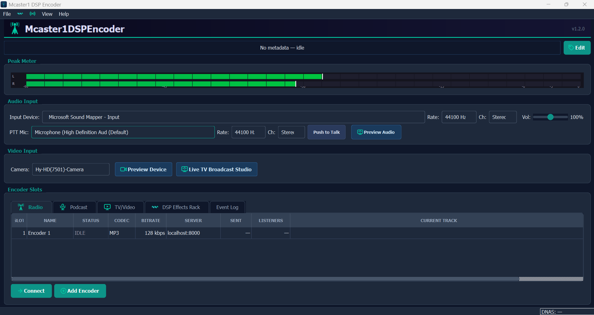
Interface Elements
- Peak Meter — Real-time stereo VU meter with peak hold
- Audio Input — PortAudio device selector with native sample rate detection
- PTT Mic — Independent push-to-talk microphone input
- Video Input — Camera device selector (Media Foundation + DirectShow)
- Preview Device / Live TV Broadcast Studio — Video preview and switcher buttons
- Encoder Slots — Tabbed view: Radio, Podcast, TV/Video, DSP Effects Rack, Event Log
Encoder Types
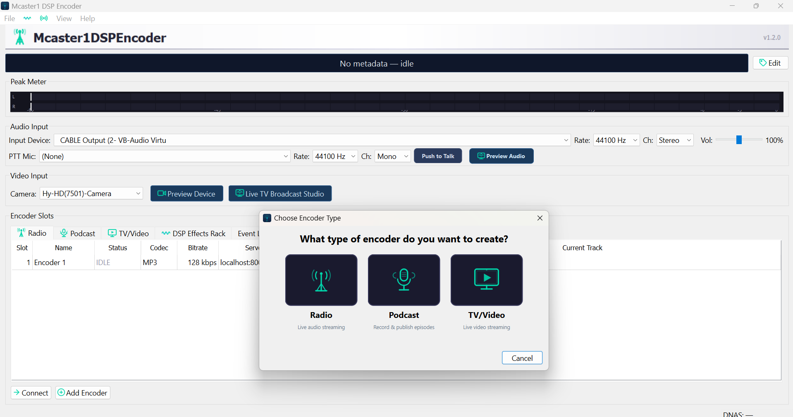
| Type | Use Case | Output |
|---|---|---|
| Radio | Live audio streaming | Audio stream to Icecast2/Shoutcast/DNAS |
| Podcast | Record + publish | WAV/MP3 archive + RSS feed |
| TV/Video | Live video streaming | Video + audio (RTMP/WebM/HLS) |
Encoder Configuration
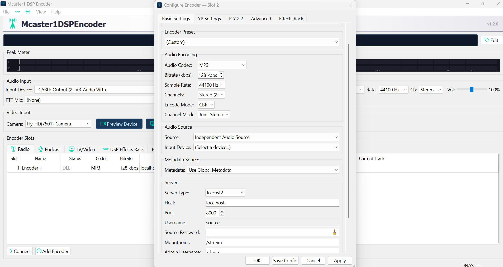
Audio Codecs
| Codec | Bitrate | Mode |
|---|---|---|
| MP3 (LAME) | 32–320 kbps | CBR |
| Ogg Vorbis | Quality 0–10 | VBR |
| Opus | 32–320 kbps | VBR (48kHz internal) |
| FLAC | Lossless | Level 0–8 |
| AAC-LC | 64–320 kbps | CBR |
| HE-AAC v1 | 24–128 kbps | SBR |
| HE-AAC v2 | 16–64 kbps | SBR+PS (stereo only) |
| AAC-ELD | 24–192 kbps | Low delay |
DSP Effects Rack
7 professional broadcast audio processors. Processing order:
Input → EQ → Sonic Enhancer → PTT Duck → AGC/Limiter → DBX Voice → Encoder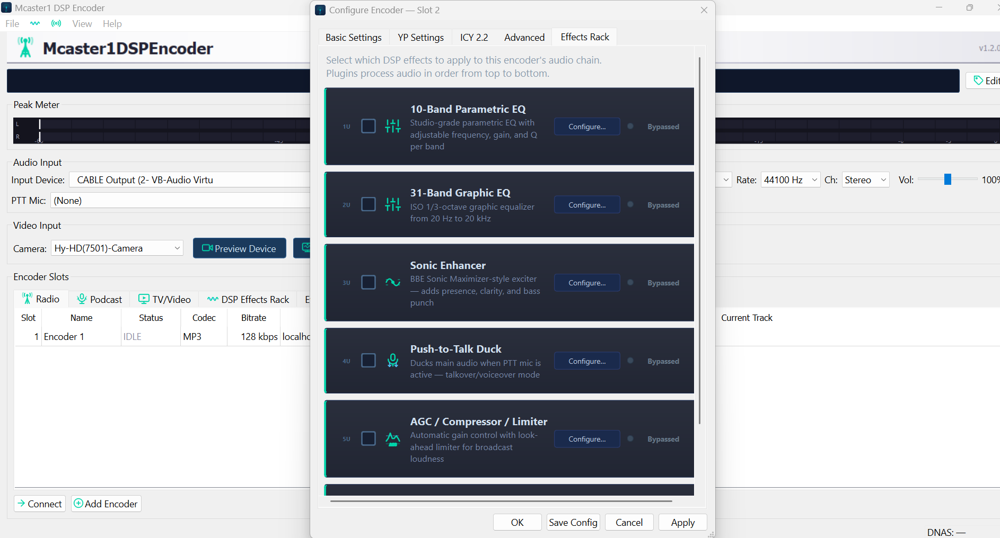
10-Band Parametric EQ
RBJ Audio EQ Cookbook biquad IIR filters with real-time frequency response visualization.
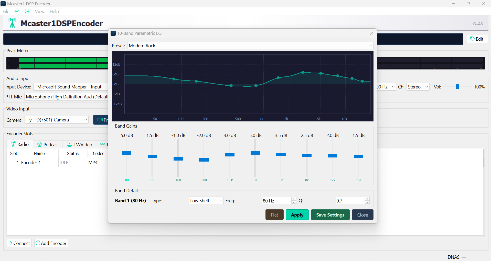
- 10 bands: peaking, low-shelf, high-shelf types
- ±24 dB gain, configurable frequency and Q per band
- Presets: Flat, Classic Rock, Country, Modern Rock
31-Band Graphic EQ
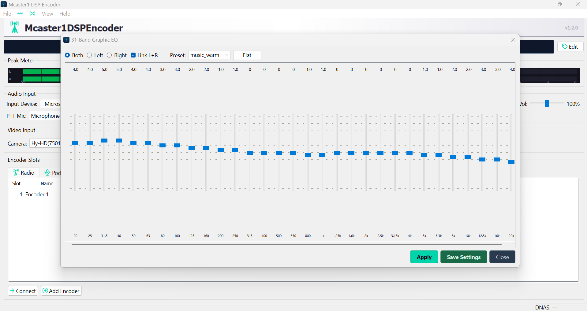
- 31 bands: 20 Hz – 20 kHz (1/3-octave intervals)
- Independent Left/Right or linked stereo mode
- ±12 dB gain per band
AGC / Compressor / Limiter
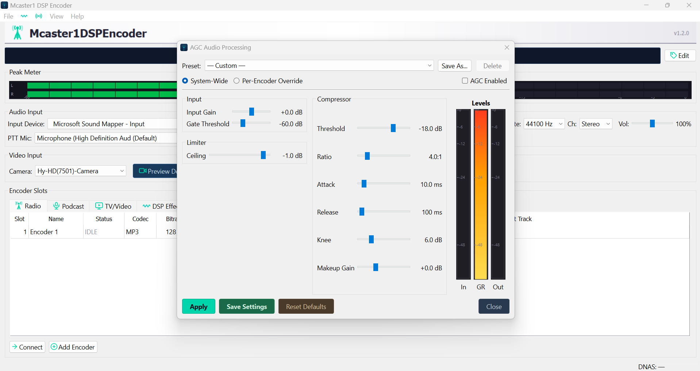
| Control | Range | Purpose |
|---|---|---|
| Input Gain | ±24 dB | Pre-compression gain |
| Gate Threshold | −80 to 0 dBFS | Noise gate |
| Threshold | −60 to 0 dBFS | Compression onset |
| Ratio | 1:1 to 20:1 | Compression ratio |
| Attack / Release | 1–100 / 10–1000 ms | Envelope timing |
| Knee | 0–24 dB | Soft knee width |
| Ceiling | −12 to 0 dBFS | Hard limiter |
| Makeup Gain | 0–24 dB | Post-compression boost |
Sonic Enhancer
BBE Sonic Maximizer clone — 3-band phase-corrective processor with Linkwitz-Riley LR4 crossovers at 150 Hz and 1.2 kHz.
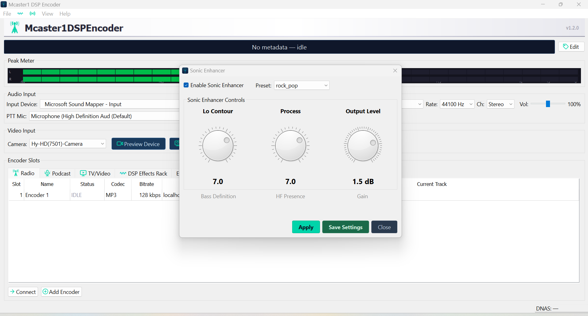
- Lo Contour (0–10) — Bass warmth via 80 Hz shelf boost
- Process (0–10) — Presence via 3 kHz shelf + soft saturation
- Output Level — −12 to +6 dB makeup gain
DBX 286s Voice Processor
5-section broadcast voice channel strip: Expander/Gate, Compressor, De-Esser, LF Enhancer, HF Detail.
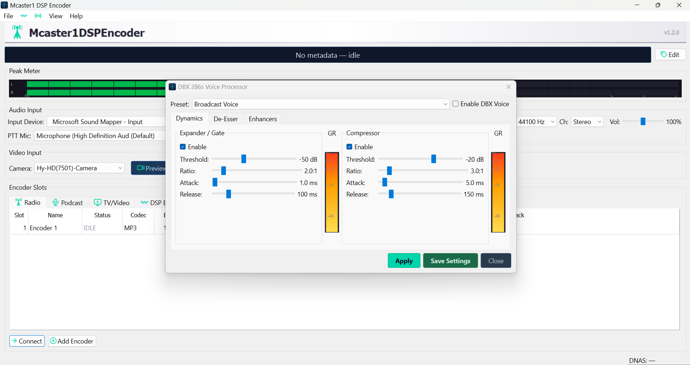
Live Video Studio
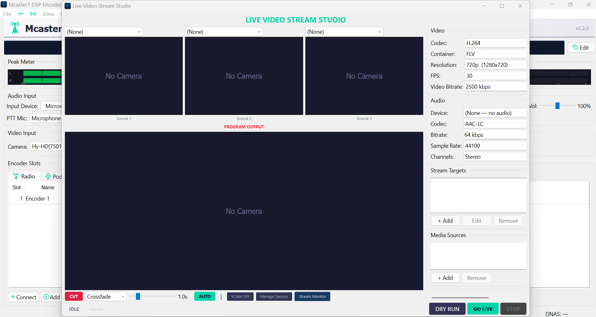
12 Broadcast Transitions
All use sRGB gamma-correct blending, 24px feathered edges, and cubic Hermite easing:
Cut, Crossfade, Fade to Black, Dip to White, Wipe Left/Right/Up/Down, Push Left/Right, Iris Circle, Dissolve
Video Codecs & Containers
| Codec | Container | Target |
|---|---|---|
| H.264 (MF HW) | FLV | YouTube Live, Twitch (RTMP) |
| VP8 / VP9 | WebM | Icecast2, Mcaster1 DNAS |
| H.264 | MPEG-TS | HLS (local segments) |
Video Overlays
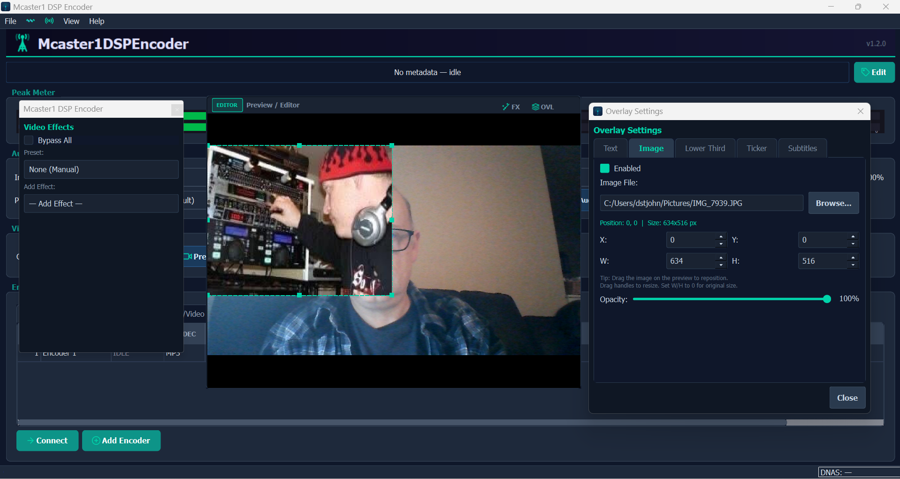
Text overlays, image watermarks, lower thirds, news ticker, SRT subtitles.
Preview Audio Studio
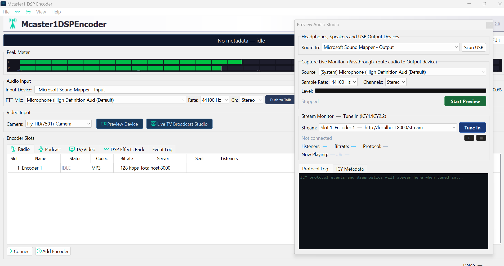
Passthrough audio monitor, live stream QC, ICY protocol analyzer, metadata display.
Streaming Setup
| Server | Protocol | Audio | Video |
|---|---|---|---|
| Mcaster1 DNAS | ICY 2.2 | All 8 codecs | WebM, FLV |
| Icecast 2.x | ICY 1.x | All 8 codecs | WebM |
| Shoutcast v1/v2 | ICY 1.x | MP3, AAC | — |
| YouTube Live | RTMP | AAC | H.264 |
| Twitch | RTMP | AAC | H.264 |
Mcaster1 Ecosystem
DSP Encoder
This application — broadcast encoder with audio + video
Mcaster1 DNAS
Icecast fork with ICY 2.2, song history, video streaming
Mcaster1 Studio
Broadcast automation — 9 surfaces, 43+ modules
Mcaster1AMP Player
Media player — dual A/B decks, video, stream viewer
AudioPipe
Virtual audio routing — Qt6 3D patch bay
TagStack
Content management — ICY 2.2 composer, media library
CastIt
Statistics monitor for Shoutcast and Icecast2
Workflow: TagStack → DSP Encoder → DNAS → Studio
Use Mcaster1AMP to monitor DSP Encoder video streams.
Keyboard Shortcuts
| Shortcut | Action |
|---|---|
Ctrl+Return | Connect / Disconnect |
Ctrl+N | Add Encoder |
Ctrl+, | Preferences |
Ctrl+Q | Quit |
Ctrl+G | AGC Settings |
Ctrl+E | 10-Band EQ |
Ctrl+Shift+E | 31-Band Graphic EQ |
Ctrl+Shift+S | Sonic Enhancer |
Ctrl+Shift+V | DBX Voice Processor |
Ctrl+T | Push-to-Talk |
Ctrl+P | Preset Browser |
Ctrl+L | Log Viewer |
Ctrl+Shift+B | Broadcast Monitor |
F1 | Documentation |
Mcaster1 DSP Encoder v1.3.1-beta — © 2026 David St. John — mcaster1.com